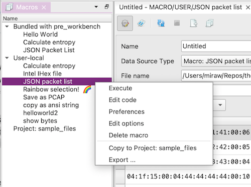
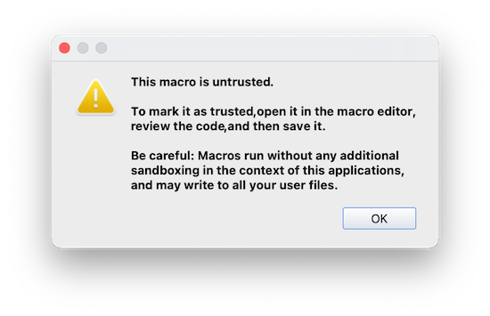

Plugin and Macro Support
Plugins
Plugin support is currently experimental and needs to be explicitly enabled.
You can load all *.py files from a folder as plugins, by setting a Plugin Directory in the settings dialog,
or by running PRE Workbench with the --plugins-dir=... argument.
Plugins can e.g. register custom file types, dock widgets or selection heuristics.
The best way to develop plugins is to open your plugin directory as a PyCharm project and configure PyCharm to use the virtualenv in which your PRE Workbench is installed. This way, you get full autocomplete support on internal objects.
Macros
Editing
To manage macros, use the Macros tool window (View > Tool Windows > Macros). There you can create, import, export, edit and run your macros.
Macros can be stored in your user directory (~/.config / %APPDATA%) and in the project database (.pre_workbench). Additionally, some example macros are bundled with the application.
You can also copy macros between the different storage locations (builtin, user, project).
Macros without a required input object (Input Type = NONE) can be directly run from the tool window by double-clicking.

Security Model
Macros run in-process, without any sandboxing - they have the same permissions as you running the app. Therefore macros are TOFE (Trust On First Edit), so if you load a new project file from somewhere else, or import a new macro, you need to first open each macro in the editor, carefully review it, and save it again. A hash of the code is then stored in your local config, marking it as trusted. It can then be run from the usual locations.

Data Types
Macros can specify a combined "Macro / Input Type", and an "Output Type".
The Output Type is currently ignored.
The Input Types are used to specify in which places a macro can be executed.
Input to the macro is provided in a variable named input, which is directly
usable in the macro code.
Types not listed below are not implemented yet / reserved for future use.
NONE
The macro has no input. It can be executed by double-clicking it in the Macros tool window.
BYTE_BUFFER
The macro expects a single ByteBuffer as input. It can be executed by right-clicking a packet in a PacketListWidget or in the context menu of a HexView. If multiple packets are selected, the macro is called repeatedly.
BYTE_BUFFER_LIST
The macro expects a ByteBufferList as input. It can be executed in the same ways as a BYTE_BUFFER macro, but is only called once.
BYTE_ARRAY
The macro expects a bytes type (sequence of bytes without metadata).
It can be executed in the HexView context menu after
selecting a byte range.
DATA_SOURCE
The macro shows up in the Data Source Type select box in the Data Source Window.
It's output (to be placed in the output variable by the macro) will
be displayed in the Data Source Window's output widget.
Helper Functions
Without additional imports, the following helper functions are available to macros:
navigateBrowser(url: str)
Opens the system web browser on the specified URL.
getClipboardText() -> str
Returns the text contents of the system clipboard.
setClipboardText(text: str)
Sets the contents of the system clipboard to the given text.
showScintillaDialog(parent, title, content, ok_callback, readonly=False, lexer=None, help_callback=None) -> str | None
Example usage for a readonly dialog:
showScintillaDialog(MainWindow, "View results", my_result_string, None, readonly=True)
Example usage for an editor dialog:
edited_data = showScintillaDialog(MainWindow, "Edit data", initial_data, None)
alert(msg, title)
Displays a messagebox with the specified message and title.
confirm(msg, title) -> bool
Displays a messagebox with OK and Cancel buttons. Returns True if the user clicks OK.
prompt(msg, defaultText, title) -> (str, bool)
Displays a text input dialog asking the user for one line of text. Returns the entered string and a boolean which is True if the user clicks OK.
log(msg, *args, **kwargs)
Logs a message with level INFO. The arguments are interpreted as in logging.debug.
logging.debug(), logging.info(), logging.warning(), logging.error()
showListSelectDialog(listOptions: List[Tuple[Any, str]], selectedOption, title: str="Select ...", parent=None, ok_callback=None, multiselect=False, help_callback=None)
MainWindow
Reference to the application main window. Can be used as the parent for dialogs.
zoom(obj: ByteBuffer | ByteBufferList | List[ByteBuffer])
Temporarily displays an object in the "Zoom" tool window.
ByteBuffer(buffer: bytes, metadata: Dict[str, any])
Returns a new ByteBuffer object.
ByteBufferList()
Returns a new ByteBufferList object.
Methods:
* list.add(obj: ByteBufferList)
Properties:
* list.buffers -> List[ByteBuffer]
* list.metadata -> Dict[str, any]
openAsUntitled(obj: ByteBuffer | ByteBufferList | List[ByteBuffer] | str)
Open a new untitled file with the specified contents. In case of ByteBuffer, a HexFileWindow is opened. In case of ByteBufferList or List[ByteBuffer], a PcapngFileWindow is opened. In case of str, a TextFileWindow is opened.